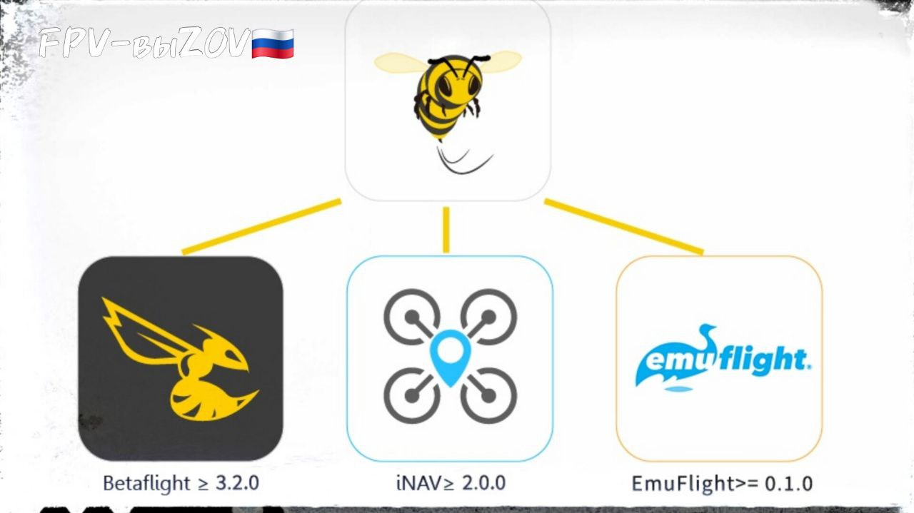
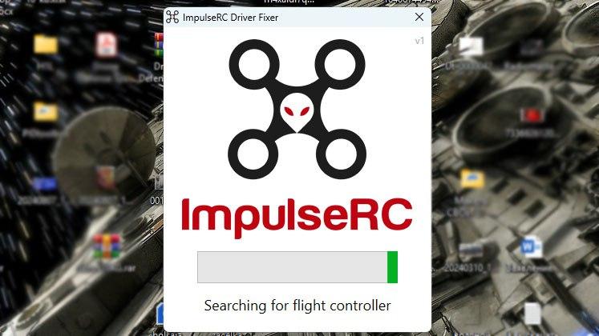
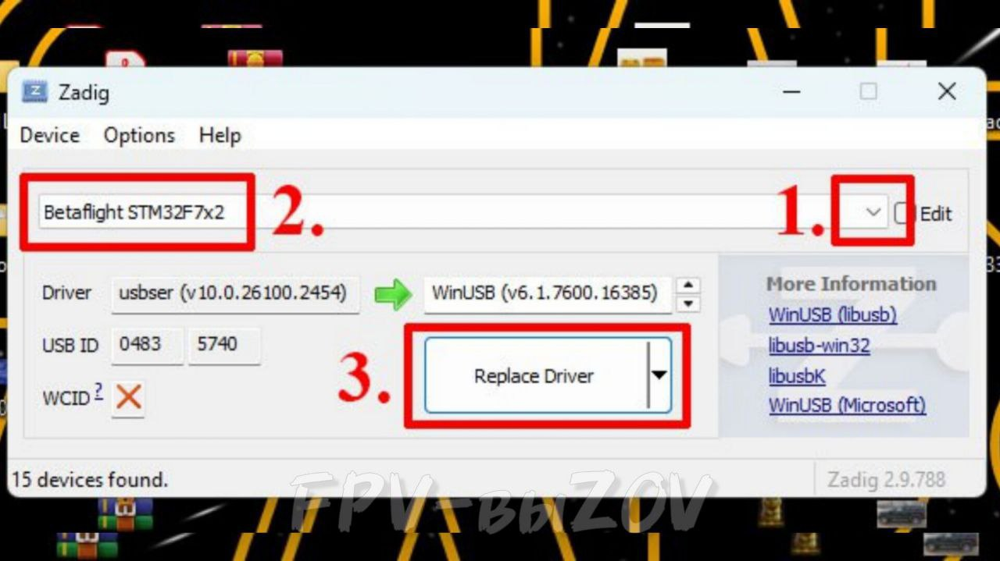
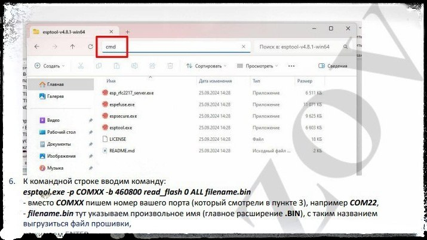
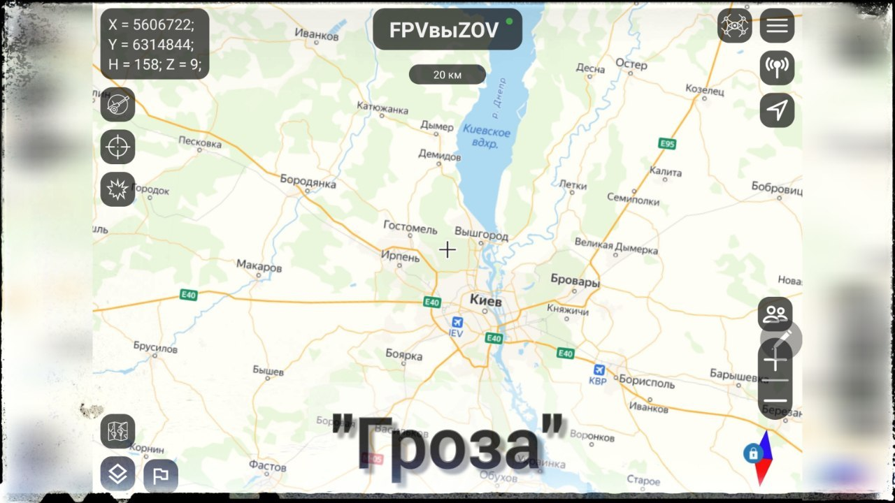
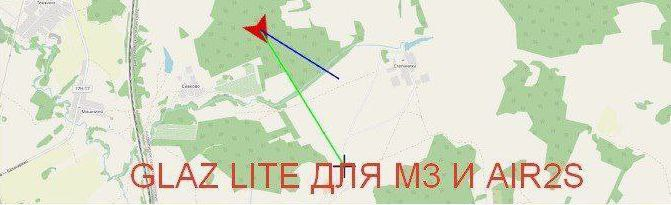
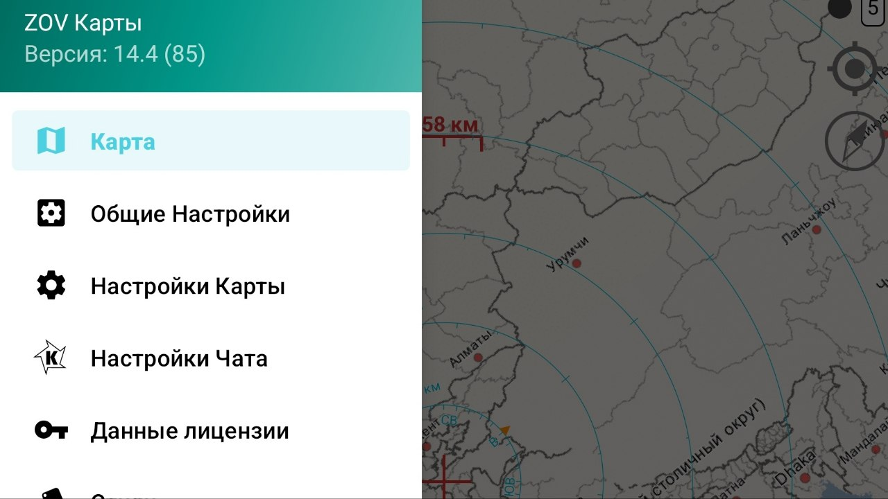
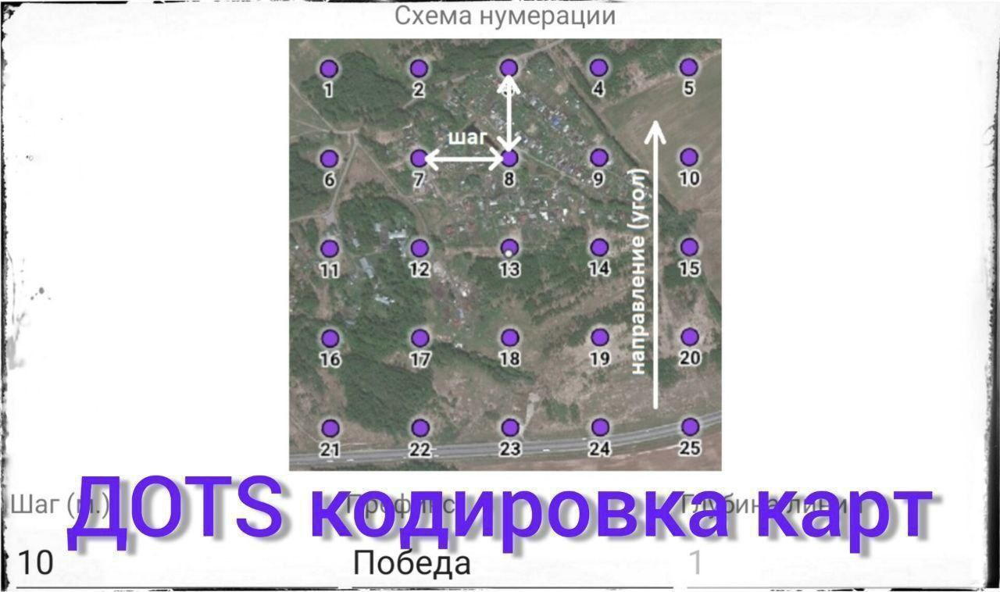
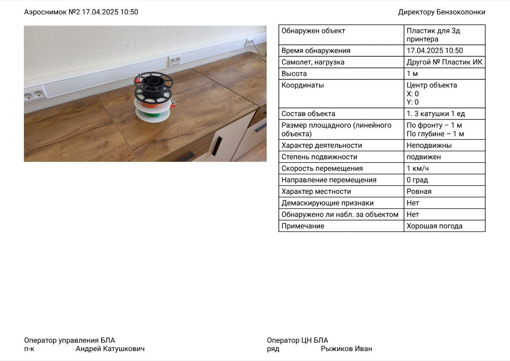

Betaflight-configurator
ℹ️ Программное обеспечение для официальных прошивок и настроек полетного контроллера.
📎
Скачать Betaflight-configurator
1. Классическая версия
.
Устанавливается на комп (Windows), содержит весь функционал.
2. Мобильная версия
.
Практически полностью заменяет декстопную версию программы, за одним исключением: в мобильной версии (10.10.0) нельзя перепрошить полетник.
* Зачем нужно перепрошивать полетник:
- когда не подключены с завода сервы.
- когда есть ошибки в работе полетника, можно попробовать исправить перепрошивкой.
Это довольно редкие случаи, поэтому смело можно считать мобильную версию программы Betaflight-configurator рабочим решением в
полевых условиях.
3. Онлайн конфигуратор
.
Не требует установки программы на устройство (ПК, Андроид), самая свежая версия.
Требует подключение к интернету.
Если кратко, то если у Вас нет проблем с подключением к интернету, то это Ваш выбор.
#программное_обеспечение
#для_windows
#для_android
#техник_fpv
#настройка_бпла
#FPV
Это вложение из поста t.me/platforma_fpv/16/1266

INAV Конфигуратор
ℹ️ INAV конфигуратор: аналог Бетафлай, созданный с упором на
навигационные функции
(возврат домой, полет по заданию, удержание высоты, удержание точки и т.п.).
📎
Русификатор для конфигуратора INAV
ℹ️ На 20.01.2025 русификация INAV Configurator проведена
примерно на 70%
. Основные вкладки переведены и доступны для понимания пользователям.
⚠️ Необходимо понимать, что для поиска информации по тонким настройкам БпЛА
лучше всего вводить запрос на языке оригинала
. В таком случае поисковая выдача будет
более полной
#программное_обеспечение
#для_windows
#настройка_бпла
Это вложение из поста t.me/platforma_fpv/16/925

Программы для анализа черного ящика (BlackBox).
Betaflight Black Box Viewer
Базовая программа для анализа логов БПЛА на прошивке Betaflight. Имеется возможность полноценной настройки рабочего пространства под разные задачи. В большинстве случаев используется для подбора параметров летательных аппаратов и решения проблем, возникающих в процессе полета.
📎
PID Tool Box
Профильная программа необходимая для подбора настроек из «раздела PID тюнинг» на основе сравнения показателей с нескольких логов.
📎
Black Box Tools
Программа дающая возможность «разбить» полученный в полете лог на ряд файлов и таблиц. Чаще всего необходим для получения GPS файла содержащего профиль полета.
📎
Google Earth
Программа способная интерпретировать GPS файлы и визуализировать их. Основные данные, которые могут быть полезны: траектория, скорость, высота, продолжительность, начальные/конечные точки.
📎
⚠️ Все программы устанавливаются на Windows.
📝
в 2х частях - "Углубленная настройка полетного контроллера. Фильтрация гироскопа, PID-тюнинг":
#программное_обеспечение
#для_windows
#настройка_бпла
#черный_ящик
#техник_бпла
Это вложение из поста t.me/platforma_fpv/16/1099

Приложение SpeedyBee для мобильных устройств
ℹ️ Аналог Betaflight Configurator, поддерживает аналогичные функции. Дополнительно поддерживает прошивку INAV.
📎
📲 Подключитесь к дрону через кабель Blutooth или OTG (только приложение для Android)
ℹ️
Непроверенная внешняя ссылка
Сайт разработчика, с инструкциями
Сайт разработчика, с инструкциями
#программное_обеспечение
#для_android
#настройка_бпла
Это вложение из поста t.me/platforma_fpv/16/1104

ImpulseRC_Driver_Fixer для Windows
ℹ️ Программа для поиска и установки драйверов для полетных контролеров.
Нужна для прошивки полетных контролеров.
📎
🖥 ImpulseRC_Driver_Fixer
1. Нужен интернет.
2. Запустить на Windows
ImpulseRC_Driver_Fixer
.
3. Подключил полетный контроллер.
4. Дождаться когда программа сама найдет и установит драйвера и отключится.
📝
ImpulseRC_Driver_Fixer
Zadig
- программы для установки DFU драйверов (загрузочных) полетного контролера на компьютер.
ℹ️ DFU драйвера нужны, чтобы можно было подключиться к полетному контроллеру в режиме загрузки и обновить прошивку (например подключить сервоприводы).
➡️
ImpulseRC_Driver_Fixer
- более простой в использовании, просто подключил полетный контроллер к компьютеру, запустил программу и ждешь окончания работы.
➡️
Zadig
- чуть посложнее в использовании, но имеет большую базу драйверов.
- Не требуют установки.
- Работают на Windows.
- Нужен интернет.
📎
#программное_обеспечение
#для_windows
#настройка_бпла
Это вложение из поста t.me/platforma_fpv/16/1111

Zadig для Windows
ℹ️ Программа дополнение к
Для загрузки и восстановления драйверов полетных контролеров.
➡️ Поддержка драйверов, которых нет в ImpulseRC_Driver_Fixer.
📎
🖥 Zadig для Windows
- Подключить интернет.
- Подключить полетный контроллер к компьютеру.
- Запустить программу.
- Нажать на стрелку справа в строке выбора устройства (1.)
- Выбрать свой полетный контроллер (2.).
- Нажать кнопку "
Instal Driver
" (3.)
- Дождаться установки драйверов.
📝
ImpulseRC_Driver_Fixer
Zadig
- программы для установки DFU драйверов (загрузочных) полетного контролера на компьютер.
ℹ️ DFU драйвера нужны, чтобы можно было подключиться к полетному контроллеру в режиме загрузки и обновить прошивку (например подключить сервоприводы).
➡️
ImpulseRC_Driver_Fixer
- более простой в использовании, просто подключил полетный контроллер к компьютеру, запустил программу и ждешь окончания работы.
➡️
Zadig
- чуть посложнее в использовании, но имеет большую базу драйверов.
- Не требуют установки.
- Работают на Windo
#программное_обеспечение
#для_windows
#настройка_бпла
Это вложение из поста t.me/platforma_fpv/16/1112

ExpressLRS Configurator, версия 1.7.7 для Windows
ℹ️ ExpressLRS Configurator - программа для сборки прошивок для оборудования ERLS (приемник/передатчик).
📎
🖥 Устанавливается на Windows. Запустить .EXE-файл, следовать сообщениям установщика.
⚠️ Для работы необходим интернет (даже если сборка делается на основе локальной папки).
#программное_обеспечение
#для_windows
#настройка_бпла
Это вложение из поста t.me/platforma_fpv/16/1123
BLHeliSuite32 для прошивки и настройке 32-битных регуляторов оборотов.
ℹ️ BLHeli - это прошивка для регуляторов оборотов (ESC), а BLHeli_32 - ее третье поколение (после BLHeli и BLHeli_S).
С помощью
BLHeliSuite32
можно
настроить
питание и направление вращения моторов, установить мелодию (например Гимн России, как у нас на видео). Обновить прошивку с помощью
BLHeliSuite32
уже нельзя - разработчики остановили обновление.
📎
🖥 Устанавливается на Windows.
- распаковать архив;
- подключить дрон к компьютеру с помощью USB-кабеля;
- подключить к дрону аккумулятор;
- запустить файл
BLHeliSuite32.exe
;
- для настройки интернет не нужен;
- для прошивки понадобится интернет - производитель приостановил обновление прошивки (для прошивки переходите на АМ32)..
⚠️ BLHeli_32 подходит только для регуляторов на базе 32-битных микроконтроллеров (STM32F0 Cortex-M0, частота 48 МГц), если у Вас 8-битный регулятор, то рекомендуем BLHeli_S изменить на прошивку Bluejay (например в конфигураторе
Непроверенная внешняя ссылка
ESC-configurator.com
ESC-configurator.com
).
⚠️ В настоящее время производитель приостановил обновление прошивки BLHeli_32, Альтернатива: AM32 - относительно новая прошивка для регуляторов оборотов с открытым исходным кодом.
#программное_обеспечение
#для_windows
#настройка_бпла
#техник_fpv
Это вложение из поста t.me/platforma_fpv/16/1128

ПО для скачивания прошивки с приемника/передатчика ELRS.
➡️ Скачать прошивку с приемника/передатчика ERLS можно несколькими способами.
1. С помощью программы
*.
*необходим TTL-адаптер для того, чтобы подключить приемник к компьютеру (передатчик подключается просто с помощью USB-кабеля).
2. С помощью программы
(облегченный вариант запуска esptool).
3. С помощью трофейная программы
*
* аналог esptool, но не требует дополнительного оборудования, нужны только приемник и полетный контроллер.
** у нас не сработала с полетным контроллером на прошивке
Не умею отображать вложенные ссылки на топики
.
⏭️ Все три ПО выложены на нашем диске:
📎
(esptool easy);
📎
(аналог esptool).
⚠️ Общее правило перед тем, как что-то делать – сделайте резервную копию прошивки. Для этого следует подключиться по wi-fi и перейти по адресу
Непроверенная внешняя ссылка
http://10.0.0.1/firmware.bin
http://10.0.0.1/firmware.bin
. Так же стоит сохранить себе настройки, перейдя по адресу
Непроверенная внешняя ссылка
http://10.0.0.1/hardware.json
http://10.0.0.1/hardware.json
, далее “сохранить как”.
📝
Инструкции
#программное_обеспечение
#для_windows
#техник_fpv
#FPV
Это вложение из поста t.me/platforma_fpv/16/1190

Программа STM32CubeProgrammer для Windows
Для снятия и загрузки резервных копий (образа) с полетных контроллеров.
ℹ️ С помощью STM32CubeProgrammer можно сделать полный дамп памяти полетного контроллера и также залить его, поэтому не играет роли какая стоит прошивка.
Работает со всеми прошивками – Betaflight, INAV или Ardupilot.
*Подходит только для полетных контроллеров на чипе STM32.
**Программой можно воспользоваться также для локальной (оффлайн) прошивки, при наличии файлов прошивки.
⏭️ Скрипты упрощают задачу чтения и записи прошивки полетного контроллера (скопировать и записать прошивку и настройки полетного контроллера). Работают вместе с STM32CubeProgrammer для Windows.
📎
- инструкция
📱Аналогичное приложение для андроида (
#программное_обеспечение
#для_windows
#техник_fpv
#FPV
Это вложение из поста t.me/platforma_fpv/16/1245

Программа StmDfuUsb для андроида
Для снятия и загрузки резервных копий (образа) с полетных контроллеров).
ℹ️ С помощью StmDfuUsb можно сделать полный дамп памяти полетного контроллера и также залить его, поэтому не играет роли какая стоит прошивка (по функционалу схожа с STM32CubeProgrammer).
Работает со всеми прошивками – Betaflight, INAV или Ardupilot.
*Подходит только для полетных контроллеров на чипе STM32.
**Программой можно воспользоваться также для локальной (оффлайн) прошивки, при наличии файлов прошивки.
📎
(.apk для Android)
📝
💻 Аналогичное приложение для Windows (
. Это более удобный вариант, если использовать со
#программное_обеспечение
#для_android
#техник_fpv
#FPV
Это вложение из поста t.me/platforma_fpv/16/1273

Программа Esptool нужна для работы с flash-памятью в системах с микроконтроллерами Espressif.
ℹ️ С помощью
Esptool
можно выполнять следующие задачи:
- читать, записывать, стирать и проверять двоичные данные, хранящиеся во flash-памяти;
- считывать характеристики чипа и другие связанные данные, такие как MAC-адрес или идентификатор микросхемы flash-памяти;
- читать и записывать однократно программируемые конфигурационные данные;
- готовить для прошивки двоичные исполняемые образы;
- анализировать, собирать и выполнять слияние двоичных образов.
Устанавливается и работает с Windows.
📎
В рамках работы с FPV-дронами данная программа используется для чтения и редактирования прошивок ELRS
Программа Esptool не имеет рабочего интерфейса, работа с ней ведется через командную строку или готовые скрипты
⚠️ Для работы с ELRS-приемниками понадобится дополнительное оборудование в виде TTL-адаптера, так как приемники не обладают своим USB-разъемом.
При работе с ELRS-передатчиками дополнительного оборудования не нужно.
#программное_обеспечение
#для_windows
#техник_fpv
#FPV
#ELRS
Это вложение из поста t.me/platforma_fpv/16/1352

SPECTROZIR SA
Программа для подключения анализатора спектра к компьютеру
.
Позволяет получать данные и управлять анализатором спектра через компьютер
на Windows
⚠️ Так как программа трофейная, настойчиво рекомендуем
запретить ей выходить в интернет
. Проще – просто отключить интернет на компьютере, для продвинутых пользователей - поставить запрет в файрволле.
#программное_обеспечение
#для_windows
#РЭР_РЭБ
Это вложение из поста t.me/platforma_fpv/16/995

Полетные приложения для оператора квадрокоптеров: DJI, AUTEL, FIMI
ℹ️ Полетное приложение - программа, устанавливаемая на пульт или мобильное устройство (телефон, планшет) на android, с помощью которой осуществляется управление дроном.
⬇️
ПОЛЕТНЫЕ ПРИЛОЖЕНИЯ ДЛЯ DJI: "DJI GO 4", "DJI Fly (v1.5)", "DJI Fly (v1.15)", DJI Pilot
1. DJI GO 4 - полетное приложение для старых моделей дронов DJI: Phantom 4/4 Advanced/4 Pro/4 Pro V2.0, Mavic Pro/Pro Platinum, Mavic 2, Mavic Air, Zenmuse X4S/X5S, Inspire 2, Spark
📎
* Устанавливается на Android (телефон/планшет)
2. DJI Fly (v1.5) - если используется отключение Drone ID с помощью BitFlip или CIAJeepDoors, то пользоваться можно только версией приложения
НЕ выше 1.5.0
,
Более новые версии приложения DJI Fly автоматически включают DroneID, отключенный таким способом.
📎
* Устанавливается на Android (телефон/планшет)
3. DJI Fly (v1.15) - полетное приложение DJI для некоммерческой серии дронов (consumer): Mavic 3/3 Classic/3 Pro, Mavic Air 2/2S/3/3S, Mavic Mini/SE/2/2 SE/3/3 Pro/4K/4 Pro, Avata/Avata 2, Neo, FPV, Flip.
📎
* Устанавливается на Android (телефон/планшет, пульт)
4. DJI Pilot - полетное приложение DJI для старых промышленных дронов: Phantom 4 RTK, Mavic 2 Enterprise/2 Enterprise Advanced, Matrice 200 Series V1/V2, Matrice 600 Pro
📎
* Устанавливается на Android (телефон/планшет)
⬇️
ПОЛЕТНЫЕ ПРИЛОЖЕНИЯ ДЛЯ AUTEL: "Autel Sky", "Autel Explorer"
1. Autel Sky - полетное приложение для дронов Autel некоммерческой серии: Autel EVO 2 Lite, Autel EVO Nano.
📎
* Устанавливается на Android (телефон/планшет)
2. Autel Explorer - полетное приложение для дронов Autel коммерческой серии: Autel EVO I, Autel EVO II Pro, Autel EVO II Dual, and Autel EVO II Enterprise.
📎
* Устанавливается на Android (телефон/планшет, пульт)
⬇️
ПОЛЕТНЫЕ ПРИЛОЖЕНИЯ ДЛЯ FIMI: "Fimi Navi 2020", "Fimi Navi Mini"
1. Fimi Navi 2020 - полетное приложение для дрона Fimi X8 SE.
📎
* Устанавливается на Android (телефон/планшет)
2. Fimi Navi Mini - полетное приложение для дрона Fimi X8 Mini.
📎
* Устанавливается на Android (телефон/планшет)
⬇️
ПОЛЕТНОЕ ПРИЛОЖЕНИЕ ДЛЯ "ЧАППИ
* Устанавливается на Android (телефон/планшет)
при поддержке
#Оператору_квадрокоптеров_DJI_AUTEL_FIMI
#программное_обеспечение
#для_android
#на_пульт
Это вложение из поста t.me/platforma_fpv/16/1009

Утилита мультбинда для пультов
DJI RC Pro (rm510b) и DJI RC Plus (rm 700)
.
ℹ️ Возможность использовать один пульт с разными версиями дронов: Mavic 3E/3T/3M (Enterprise), Mavic 3/3 Classic/3 Cine/3 Pro, Mavic 3 Mini/3 Mini Pro, Mavic Air2S (Consumer). *
📝Шаг 1. Проверка совместимости пульта с утилитой
.
Для проверки необходимо:
📎
- распаковать архив на компьютер,
- включить и подключить пульт к компьютеру,
- запустить файл "
detect_revision.bat
" из папки
TOOLS
.
По результатам проверки:
- модель
rm510b/rm 700
;
- серийный номер
4QQZ…
или
5YSZ
.. (для rm510b) /
4LF…
(для rm 700),
- наличие установленной утилиты
cannot open
.
Если значения совпадают с
приведенными
, то утилиту можно устанавливать.
📝
Шаг 2. Установка утилиты мультибинда на пульт DJI.
Вам понадобится:
- компьютер с Windows,
- пульт DJI RC Pro (rm510b) или DJI RC Plus (rm 700),
- файлы установки утилиты,
- кабель USB (typeA/typeC).
* скачиваем утилиту на windows, далее следуем инструкции по установке.
⚠️ После распаковки не переименовывать и не переносить файлы из оригинальных папок. Установка привязана к оригинальному пути к файлам и названиям.
📝 Шаг 3. Работа.
Интерфейс "утилиты мультибинда" на пультах RC Pro версий "release 1" и "release 2" будет
, проверить
можно на первом Шаге данной инструкции.
На пультах PC Plus и PC Pro версии "release 1"
отображаются иконки с названиями типов пультов. (на фото слева) Чтобы выбрать нужную модель дрона - надо знать с каким пультом он совместим, и выбрать иконку соответствующего пульта.
RC Plus - работа с дроном Matrice 30T (Enterprise)*,
RC Enterprise - работа дронами Mavic 3E/3T/3M (Enterprise),
RC Pro - работа дронами Mavic 3/3 Classic/3 Cine/3 Pro, Mavic 3 Mini/3 Mini Pro, Mavic Air2S (Consumer).
Выбираете ярлык нужного приложения (под модель дрона), после чего пульт перезапускается уже с выбранным полетным приложением.
📎
На пультах RC Pro версии "release 2"
предлагается выбрать сразу нужную модель дрона (на фото справа), весь модельный ряд выведен на экран.
Выбираете нужную модель дрона, приступаете к работе.
📎
⚠️Чтобы не было ограничений на 5 полетов, при использовании неродного пульта, нужно:
- знать учетную запись, но которую активирован дрон, и запускать его с этой записи,
- или отвязать дрон от учетной записи (либо с оригинальной учетки, либо через программу UNBIND от РХ).
* Данная утилита не является аналогом "
COS",
в котором помимо мультибинда
#Оператору_квадрокоптеров_DJI_AUTEL_FIMI
#прошивка_пульта_dji
#на_пульт
Это вложение из поста t.me/platforma_fpv/637/972
Drone Hack
ℹ️ Программа для настройки, прошивки и загрузки "хаков" дронов DJI.
Версия, не требующая регистрации.
Для Windows.
Не требует установки.
Непроверенная внешняя ссылка
Сайт ДронХак
Сайт ДронХак
на текущий момент (20.07.2025) доступен без VPN. Там доступны новые версии программы.
⚠️ Но:
- скачанная с сайта программа DroneHack для использования требует регистрации;
- для регистрации требуется e-mail
зарегистрированный не на территории РФ
.
Поэтому используйте более старую версию. Она содержит весь необходимый функционал.
ПЛАТФОРМА_FPV
#программное_обеспечение
#для_windows
Это вложение из поста t.me/platforma_fpv/16/1689

ТРЕПЕТ 2.5.050
ℹ️ Российское программное обеспечение для оператора DJI, устанавливается:
- на пульт
RC PRO и RC PLUS
(режим "Оператор");
- на android (режим "Напарник", может использоваться как карты).
✔️ Поддерживаются модели дронов
- DJI: М3*, М3T/М3Е, Matrice 30/300/350, Matrice 4Е/4E, Matrice 4D, Mini3/3Pro, Mini4PRO**;
- Autel 4Tmax (прошивка1.8+), Autel Alpha/Titan.
* Mavic 3 в Трепете работает только на Pro пультах. RM510, RM510b и RM700 с COS или
** Требуется прошивка 1001 и пульт RM510, 510b, 700 с COS или
АКТИВАЦИЯ
- Пульт (режима "Оператор") требуется активация.
*в группе СВОи_FPV-выZOV , ветка "ПО").
- Андроид (режим "Напарник") активация не требуется.
📝
Задачи, решаемые с помощью ПО "Трепет"
с дронов по Wi-Fi.
На карте
нужно нажать на свои летающие дроны. Возможен просмотр нескольких трансляций с нескольких дронов.
- Расчет зон Френеля (радиовидимости) при измерении расстояний.
- Точка дом (Даёт возможность по маркеру лететь если заблудишься).
- ... и много других возможностей,
⚠️ Будет полезно
-
(трансляция экрана пульта DJI на Windows или Android TV)
или -
* Обязательно включать виртуализацию (аппаратное ускорение), чтобы работало плавно.
* если стандартная 64х-битная версия (выше) у вас не устанавливается - попробуйте поставить эту 32+64 битную версию.
#программное_обеспечение
#Оператору_квадрокоптеров_DJI_AUTEL_FIMI
#DJI
#Российская_разработка
#для_android
#на_пульт
#трансляция_экрана
#карты
Это вложение из поста t.me/platforma_fpv/16/1096

Гроза_2.4.0. от российского разработчика
ℹ️ Российское программное обеспечение, устанавливается на андроид (планшет/телефон) версии не ниже 9.0, взаимодействует с программами "GLAZ" и "GLAZ lite" (для операторов DJI и Autel),
в том числе "Гроза" может использоваться как карты
(российская альтернатива программе "Альпинквест").
📲
что нового в 2.4
Д
обавлен новый функционал, для карт в том числе, подробнее
❕Для каждого устройства требуется активация (доступна в группах: "Гроза" и "СВОи_FPV_выZOV").
📝
Задачи, решаемые с ПО "Гроза":
1. Карты (онлайн/оффлайн).
2. Матрица высот.
3. Целеуказание и корректировка артиллерийского огня (совместно с "Глаз", и без него).
4. Привязка снимков к карте.
5. Онлайн трекинг - отслеживание онлайн перемещения цели.
6. Входит в состав комплекса "ГроZа-GLAZ"
Пакет всех программ комплекса "ГроZа-GLAZ"
Устанавливается на андроид (планшет/телефон)
1. "ГроZа": работает с ПО "GLAZ" и "GLAZ lite", может использоваться как карты
2. "GLAZ Lite": для моделей DJI "М3", "М3CLASSIC", "М3PRO", "AIR2S", и "AUTEL LITE/NANO".
Устанавливается на пульт
3. "GLAZ3": для моделей DJI - "М3Т", "М3Е", "MINI 3", "MATRICE 30 / 30T", "MATRICE 300 RTK", "MATRICE 350 RTK", "MATRICE 4T/4E", для моделей AUTEL "640T V2/V3", " ALPHA" и дронов на "MAVLink".
4. "GLAZ4":
.
🤝 Спасибо разработчикам за содействие и красивый код.
Вместе победим!🇷🇺
#программное_обеспечение
#для_android
#карты
#Российская_разработка
#Командиру
Это вложение из поста t.me/platforma_fpv/16/1233

GLAZ_V3_release_3.6.2.3.
Новая версия.
ℹ️ Российское программное обеспечение, устанавливается на пульт DJI.
Совместим с М3*, М3Т, М3Е, MATRICE 30 / 30T, MATRICE 300 RTK, MATRICE 350 RTK, AUTEL 640T V2/V3, MAVLink.
*М3 при наличие утилиты мультибинда или COS.
## V3.6.2.3
Список обновлений
* для каждого устройства требуется активация, в группах: "Гроза" и "СВОи_FPV_выZOV.
Пакет всех программ комплекса "ГроZа-GLAZ"
Устанавливается на андроид (планшет/телефон)
1. "ГроZа": работает с ПО "GLAZ" и "GLAZ lite", может использоваться как карты
2. "GLAZ Lite": для моделей DJI "М3", "М3CLASSIC", "М3PRO", "AIR2S", и "AUTEL LITE/NANO".
Устанавливается на пульт
3. "GLAZ3": для моделей DJI - "М3Т", "М3Е", "MINI 3", "MATRICE 30 / 30T", "MATRICE 300 RTK", "MATRICE 350 RTK", "MATRICE 4T/4E", для моделей AUTEL "640T V2/V3", " ALPHA" и дронов на "MAVLink".
4. "GLAZ4":
.
🤝 Спасибо разработчикам за содействие и красивый код.
Вместе победим!🇷🇺
😎 Будет полезно
-
(трансляция экрана пульта DJI на Windows или Android TV);
-
- совместим с М3, М3CLASSIC, М3PRO, AIR2S, AUTEL LITE/NANO.
-
(карты и другие возможности).
#программное_обеспечение
#Оператору_квадрокоптеров_DJI_AUTEL_FIMI
#DJI
#трансляция_экрана
#Российская_разработка
#на_пульт
Это вложение из поста t.me/platforma_fpv/16/1294

ГлаZ_lite V1.7.5
ℹ️ Российское программное обеспечение, устанавливается на Андроид (телефон/планшет).
Совместим с М3, М3CLASSIC, М3PRO, AIR2S, AUTEL LITE/NANO.
## V1.7.5.
Исправлены ошибки, добавлен и улучшен функционал.
* распространяется бесплатно, для каждого устройства требуется активация ( в группах: "Гроза" и "СВОи_FPV_выZOV).
Пакет всех программ комплекса "ГроZа-GLAZ"
Устанавливается на андроид (планшет/телефон)
1. "ГроZа": работает с ПО "GLAZ" и "GLAZ lite", может использоваться как карты
2. "GLAZ Lite": для моделей DJI "М3", "М3CLASSIC", "М3PRO", "AIR2S", и "AUTEL LITE/NANO".
Устанавливается на пульт
3. "GLAZ3": для моделей DJI - "М3Т", "М3Е", "MINI 3", "MATRICE 30 / 30T", "MATRICE 300 RTK", "MATRICE 350 RTK", "MATRICE 4T/4E", для моделей AUTEL "640T V2/V3", " ALPHA" и дронов на "MAVLink".
4. "GLAZ4":
🤝 Спасибо разработчикам за содействие и красивый код.
Вместе победим!🇷🇺
😎 Будет полезно
-
(трансляция экрана пульта DJI на Windows или Android TV);
-
- совместим с М3Т, М3Е, MATRICE 30 / 30T, MATRICE 300 RTK, MATRICE 350 RTK, AUTEL 640T V2/V3, MAVLink;
-
(карты и другие возможности).
#программное_обеспечение
#Оператору_квадрокоптеров_DJI_AUTEL_FIMI
#DJI
#трансляция_экрана
#Российская_разработка
#для_android
Это вложение из поста t.me/platforma_fpv/16/1318

Если Вам нужно транслировать экран пульта DJI или AUTEL на компьютер Windows или Android TV - используйте Miracast
(протокол трансляции экрана одного устройства на другое устройство).
📎 Скачать
на пульт
1. Установить на пульт studiosoolter.screenmirroring.miracast.apk
2. На компьютере запустить «Проецирование на компьютер» (на компьютере должен быть включен Wi-Fi).
На телевизоре с android запустить Miracast.
3. Запустить на пульте Screen Mirroring.
4. Закрыть экран с доступными для трансляции устройствами.
5. Нажать на Screen Mirror.
6. Нажать START.
7. Выбрать устройство для трансляции.
Готово – экран пульта транслируется.
#Оператору_квадрокоптеров_DJI_AUTEL_FIMI
#программное_обеспечение
#для_android
#на_пульт
Это вложение из поста t.me/platforma_fpv/16/1255

FlexBV - программа для чтения электронных схем.
Для ремонта и диагностики дронов бренда DJI.
Оптимальный набор техника DJI: программа FlexBV и набор схем дронов DJI для этой программы:
- Программа связывает обзоры плат и схемы, избавляя от необходимости вручную делать перекрёстные ссылки. Это обеспечивает более плавный процесс ремонта и позволяет сосредоточиться на поиске неисправности.
- На схеме электронной платы можно узнать серийные номера комплектующих, увидеть распиновку, отследить соединения компонентов. Удобно при ремонте электронных схем, нет необходимости прозванивать (тестировать) каждую цепь, а сразу найти ее от поврежденного компонента.
ℹ️
Схемы представлены для следующих дронов:
DJI 4P IMU, DJI Mavic Air2, DJI Mavic Air2S, DJI Mavic Air3, DJI Mavic Pro, DJI Mavic2, DJI Mavic3, DJI Mavic3 Pro, DJI Mini1, DJI Mini2, DJI Mini3, DJI Mini3 Pro, DJI Mini4 Pro.
📎
#программное_обеспечение
#для_windows
#техник_бпла
#ремонт
#DJI
Это вложение из поста t.me/platforma_fpv/16/1282

DJI Battery Killer
ℹ️ Программа для разблокировки АКБ DJI. Работает с Windows.
📝
Причины блокировки АКБ
:
- полный разряд;
- неправильное установка;
- перегрев АКБ;
- сбой прошивки или устаревшая прошивка дрона.
📎
.
📝 Инструкция:
"
⚠️ Для подключение АКБ к компьютеру Вам понадобится адаптер CP2112.
#программное_обеспечение
#для_windows
#техник_бпла
#ремонт
#DJI
#АКБ
Это вложение из поста t.me/platforma_fpv/16/1299

ZOV КАРТЫ
ℹ️ Российская альтернатива картам "AlpineQuest". Приложение совместимо с российскими программами
Невозможно отобразить содержимое https://t.me/platforma_fpv/16/1147
", "КВАНТ", а так же с AlpineQuest и другими.
📲 Основные изменения в версии 14.8:
1) Добавлена возможность открытия/чтения файлов формата GEOJSON (в том числе для файлов с полем подписи "NAME" - "name");
2) Добавлено открытие с автодобавлением в менеджере слоев файлов форматов: GEOJSON, KML, KMZ, MBTILES
(в том числе для Telegram).
Устанавливается на андроид, требуется активация.
📎
(позволяет запускать приложения андроида на компьютерах с Windows).
📝
Уроки и инструкции
- Перенос меток из Альпинквеста -
- Много информации
при поддержке
#программное_обеспечение
#для_android
#для_windows
#Российская_разработка
#Карты
Это вложение из поста t.me/platforma_fpv/16/1135
ТРЕПЕТ 2.5.050
ℹ️ Российское программное обеспечение для оператора DJI, устанавливается:
- на пульт
RC PRO и RC PLUS
(режим "Оператор");
- на android (режим "Напарник", может использоваться как карты).
✔️ Поддерживаются модели дронов
- DJI: М3*, М3T/М3Е, Matrice 30/300/350, Matrice 4Е/4E, Matrice 4D, Mini3/3Pro, Mini4PRO**;
- Autel 4Tmax (прошивка1.8+), Autel Alpha/Titan.
* Mavic 3 в Трепете работает только на Pro пультах. RM510, RM510b и RM700 с COS или
** Требуется прошивка 1001 и пульт RM510, 510b, 700 с COS или
АКТИВАЦИЯ
- Пульт (режима "Оператор") требуется активация.
*в группе СВОи_FPV-выZOV , ветка "ПО").
- Андроид (режим "Напарник") активация не требуется.
📝
Задачи, решаемые с помощью ПО "Трепет"
с дронов по Wi-Fi.
На карте
нужно нажать на свои летающие дроны. Возможен просмотр нескольких трансляций с нескольких дронов.
- Расчет зон Френеля (радиовидимости) при измерении расстояний.
- Точка дом (Даёт возможность по маркеру лететь если заблудишься).
- ... и много других возможностей,
⚠️ Будет полезно
-
(трансляция экрана пульта DJI на Windows или Android TV)
или -
* Обязательно включать виртуализацию (аппаратное ускорение), чтобы работало плавно.
* если стандартная 64х-битная версия (выше) у вас не устанавливается - попробуйте поставить эту 32+64 битную версию.
#программное_обеспечение
#Оператору_квадрокоптеров_DJI_AUTEL_FIMI
#DJI
#Российская_разработка
#для_android
#на_пульт
#трансляция_экрана
#карты
Это вложение из поста t.me/platforma_fpv/16/1096
Гроза_2.4.0. от российского разработчика
ℹ️ Российское программное обеспечение, устанавливается на андроид (планшет/телефон) версии не ниже 9.0, взаимодействует с программами "GLAZ" и "GLAZ lite" (для операторов DJI и Autel),
в том числе "Гроза" может использоваться как карты
(российская альтернатива программе "Альпинквест").
📲
что нового в 2.4
Д
обавлен новый функционал, для карт в том числе, подробнее
❕Для каждого устройства требуется активация (доступна в группах: "Гроза" и "СВОи_FPV_выZOV").
📝
Задачи, решаемые с ПО "Гроза":
1. Карты (онлайн/оффлайн).
2. Матрица высот.
3. Целеуказание и корректировка артиллерийского огня (совместно с "Глаз", и без него).
4. Привязка снимков к карте.
5. Онлайн трекинг - отслеживание онлайн перемещения цели.
6. Входит в состав комплекса "ГроZа-GLAZ"
Пакет всех программ комплекса "ГроZа-GLAZ"
Устанавливается на андроид (планшет/телефон)
1. "ГроZа": работает с ПО "GLAZ" и "GLAZ lite", может использоваться как карты
2. "GLAZ Lite": для моделей DJI "М3", "М3CLASSIC", "М3PRO", "AIR2S", и "AUTEL LITE/NANO".
Устанавливается на пульт
3. "GLAZ3": для моделей DJI - "М3Т", "М3Е", "MINI 3", "MATRICE 30 / 30T", "MATRICE 300 RTK", "MATRICE 350 RTK", "MATRICE 4T/4E", для моделей AUTEL "640T V2/V3", " ALPHA" и дронов на "MAVLink".
4. "GLAZ4":
.
🤝 Спасибо разработчикам за содействие и красивый код.
Вместе победим!🇷🇺
#программное_обеспечение
#для_android
#карты
#Российская_разработка
#Командиру
Это вложение из поста t.me/platforma_fpv/16/1233
GLAZ_V3_release_3.6.2.3.
Новая версия.
ℹ️ Российское программное обеспечение, устанавливается на пульт DJI.
Совместим с М3*, М3Т, М3Е, MATRICE 30 / 30T, MATRICE 300 RTK, MATRICE 350 RTK, AUTEL 640T V2/V3, MAVLink.
*М3 при наличие утилиты мультибинда или COS.
## V3.6.2.3
Список обновлений
* для каждого устройства требуется активация, в группах: "Гроза" и "СВОи_FPV_выZOV.
Пакет всех программ комплекса "ГроZа-GLAZ"
Устанавливается на андроид (планшет/телефон)
1. "ГроZа": работает с ПО "GLAZ" и "GLAZ lite", может использоваться как карты
2. "GLAZ Lite": для моделей DJI "М3", "М3CLASSIC", "М3PRO", "AIR2S", и "AUTEL LITE/NANO".
Устанавливается на пульт
3. "GLAZ3": для моделей DJI - "М3Т", "М3Е", "MINI 3", "MATRICE 30 / 30T", "MATRICE 300 RTK", "MATRICE 350 RTK", "MATRICE 4T/4E", для моделей AUTEL "640T V2/V3", " ALPHA" и дронов на "MAVLink".
4. "GLAZ4":
.
🤝 Спасибо разработчикам за содействие и красивый код.
Вместе победим!🇷🇺
😎 Будет полезно
-
(трансляция экрана пульта DJI на Windows или Android TV);
-
- совместим с М3, М3CLASSIC, М3PRO, AIR2S, AUTEL LITE/NANO.
-
(карты и другие возможности).
#программное_обеспечение
#Оператору_квадрокоптеров_DJI_AUTEL_FIMI
#DJI
#трансляция_экрана
#Российская_разработка
#на_пульт
Это вложение из поста t.me/platforma_fpv/16/1294
ГлаZ_lite V1.7.5
ℹ️ Российское программное обеспечение, устанавливается на Андроид (телефон/планшет).
Совместим с М3, М3CLASSIC, М3PRO, AIR2S, AUTEL LITE/NANO.
## V1.7.5.
Исправлены ошибки, добавлен и улучшен функционал.
* распространяется бесплатно, для каждого устройства требуется активация ( в группах: "Гроза" и "СВОи_FPV_выZOV).
Пакет всех программ комплекса "ГроZа-GLAZ"
Устанавливается на андроид (планшет/телефон)
1. "ГроZа": работает с ПО "GLAZ" и "GLAZ lite", может использоваться как карты
2. "GLAZ Lite": для моделей DJI "М3", "М3CLASSIC", "М3PRO", "AIR2S", и "AUTEL LITE/NANO".
Устанавливается на пульт
3. "GLAZ3": для моделей DJI - "М3Т", "М3Е", "MINI 3", "MATRICE 30 / 30T", "MATRICE 300 RTK", "MATRICE 350 RTK", "MATRICE 4T/4E", для моделей AUTEL "640T V2/V3", " ALPHA" и дронов на "MAVLink".
4. "GLAZ4":
🤝 Спасибо разработчикам за содействие и красивый код.
Вместе победим!🇷🇺
😎 Будет полезно
-
(трансляция экрана пульта DJI на Windows или Android TV);
-
- совместим с М3Т, М3Е, MATRICE 30 / 30T, MATRICE 300 RTK, MATRICE 350 RTK, AUTEL 640T V2/V3, MAVLink;
-
(карты и другие возможности).
#программное_обеспечение
#Оператору_квадрокоптеров_DJI_AUTEL_FIMI
#DJI
#трансляция_экрана
#Российская_разработка
#для_android
Это вложение из поста t.me/platforma_fpv/16/1318

DOTS версия 2.0.5
Кодировка карт. Российская разработка.
ℹ️ Расширенный функционал для кодирования карт и маршрутов. Отличается от других более широким набором функций (например: есть "зверушки").
⚡️
Версия Дотс 2.0.5
Появился инструмент "азимутальная линейка" (Радар).
Используйте поворот сетки, если необходимо измерять азимуты от магнитного или географического севера. Без поворота исчисление углов идёт от координатного севера (дирекционные углы).
🌐 Результаты работы "Дотс" можно выгрузить и в другие топографические программы, в том числе через формат kml. Совместим с российскими программами
", Ветерок (выгрузка через kml), а так же с Альпинквестом.
📎
🇷🇺 Программа "DOTs" распространяется бесплатно в целях приближения победы России над противниками.
* Требуется активация (у разработчиков или в группе СВОи_FPV_выZOV)
#программное_обеспечение
#для_android
#карты
#Российская_разработка
#Командиру
Это вложение из поста t.me/platforma_fpv/16/1160

UAVData_1.4.
ℹ️ Программа которая позволяет быстро и в едином стиле создавать разведдонесения (аэрофотоснимки) с БПЛА.
Отчеты выгружаются в формате .pdf.
⚡️
UAVDATA_1.4
⚡️
Добавлено поле времени "Взлет - посадка"
📎
Работать с программе легко!
Для нанесения фигуры на снимок нужно нажать на нужную вам фигуру, нанести начальную и конечную точку фигуры и она появится на фотоснимке.
✍️ Обратная связь (предложения по улучшению)
при поддержке
#программное_обеспечение
#Оператору_квадрокоптеров_DJI_AUTEL_FIMI
#для_android
Это вложение из поста t.me/platforma_fpv/16/1339

Набор программ для создания и просмотра 3D карт
3D-карты полезны FPV-оператору для:
- выбора и прокладки маршрута,
- выбора точки взлет БПЛА,
- размещения ретрансляторов и выносов,
- установки постов наблюдения.
📝 В набор для просмотра 3Д карт входят три программы:
1. Relief Mapper
- создание 3D-карт.
2. Relief Viewer
- просмотр 3D-карт.
* разработчик:
SASPlanet
- скачивание карт и матриц высот.
* разработчик
Непроверенная внешняя ссылка
Sasgis.org
Sasgis.org
+ необходимая для работы программ MATLAB Runtime.
📝 Дополнительно, в пакет файлов входят:
- необходимая для работы программ MATLAB Runtime;
- видеоинструкции.
📎
* доступ ограничен.
ℹ️
Особенности установки и использования.
Все программы работают на Windows.
Программы представлены в двух вариантах:
1. Install - для постоянной установки на компьютер.
2. Portable - не требует установки, запускается сразу из папки по файлу.exe.
Перед установкой (Install) или запуском (Portable) программ ReliefMapper и Relief Viewer необходимо установить
MATLAB Runtime
(идет в комплекте).
📝
Для быстрой работы программы просмотра 3D-карт рекомендуется
:
- устанавливать программу на
SSD-диск
,
- создавать карты в
низком разрешении
.
🌐 Для скачивания карт и матриц высот (SASPlanet) необходим интернет.
Сами программы создания и просмотра 3D-карт интернета не требуют.
#программное_обеспечение
#Российская_разработка
#Карты
#для_windows
Это вложение из поста t.me/platforma_fpv/16/1479

Fast STL Viewer
ℹ️Приложение для мобильного - просматривать STL-файлы.
📎
(версия 2.19)
#программное_обеспечение
#для_android
Это вложение из поста t.me/platforma_fpv/16/1017

Симулятор Liftoff
.
ℹ️ Liftoff - самый массовый и основной симулятор. Необходим для приобретения первоначальных навыков пилотирования на FPV-дроне.
- симуляторы для поддержания и приобретения более насыщенного навыка пилотирования.
📎
Непроверенная внешняя ссылка
СКАЧАТЬ СИМУЛЯТОР LIFTOFF
СКАЧАТЬ СИМУЛЯТОР LIFTOFF
(17.7 ГБ)
🖥
Как скачать и установить симулятор Liftoff
1. Скачать из папки все файлы .z0Х (Х - число от 1 до 99) + файл .zip (все файл будут иметь название, кроме расширения) в одну папку на компьютере.
2. После скачивания, нажать правой кнопкой на файл с расширением .zip и с помощью любого архиватора (WinRAR, 7zip, встроенный) - распаковать в текущую папку.
3. После окончания процесса разархивации, открываем распакованную папку и запускаем симулятор с помощью файла
Liftoff.exe
(если симулятор запустится нормально, то скачанные архивы можно удалить, чтобы не занимали лишнего места на компьютере).
📝 Стабильный, медленный, управляемый полет - необходимый навык оператора ударного дрона.
На первоначальном этапе рекомендуем отрабатывать его на трассе Minus Two симулятора Liftoff, скорость полёта не должна превышать 5-6 км/ч, задевания элементов трассы не допустимы (смотрите видео).
Тренируйтесь грамотно.
#программное_обеспечение
#для_windows
#обучение
#FPV
#симулятор
Это вложение из поста t.me/platforma_fpv/16/1209

Симулятор Uncrashed.
- симуляторы для поддержания и приобретения более насыщенного навыка пилотирования.
- самый массовый и основной симулятор. Необходим для приобретения первоначальных навыков пилотирования на FPV-дроне.
📎
Непроверенная внешняя ссылка
СКАЧАТЬ СИМУЛЯТОР UNCRASHED
СКАЧАТЬ СИМУЛЯТОР UNCRASHED
(16.1 ГБ)
🖥
Как скачать и установить симулятор Uncrashed.
1. Скачать из папки все файлы .z0Х (Х - число от 1 до 99) + файл .zip (все файл будут иметь название, кроме расширения) в одну папку на компьютере.
2. После скачивания, нажать правой кнопкой на файл с расширением .zip и с помощью любого архиватора (WinRAR, 7zip, встроенный) - распаковать в текущую папку.
3. После окончания процесса разархивации, открываем распакованную папку и запускаем симулятор с помощью файла
Uncrashed.exe
(если симулятор запустится нормально, то скачанные архивы можно удалить, чтобы не занимали лишнего места на компьютере).
Видео от подписчика.
Трасса "Город будущего". Время: 32 секунды (00:32:849)
побит!
Кто обойдет этот рекорд, присылайте видео прохода трассы.
#программное_обеспечение
#для_windows
#обучение
#FPV
#симулятор
Это вложение из поста t.me/platforma_fpv/16/1208

Симулятор Velocidrone
- симуляторы для поддержания и приобретения более насыщенного навыка пилотирования.
- самый массовый и основной симулятор. Необходим для приобретения первоначальных навыков пилотирования на FPV-дроне.
📎
Непроверенная внешняя ссылка
СКАЧАТЬ СИМУЛЯТОР VELCIODRONE
СКАЧАТЬ СИМУЛЯТОР VELCIODRONE
(15.8 ГБ)
🖥
Как скачать и установить симулятор Velocidrone.
1. Скачать из папки все файлы .z0Х (Х - число от 1 до 99) + файл .zip (все файл будут иметь название, кроме расширения) в одну папку на компьютере.
2. После скачивания, нажать правой кнопкой на файл с расширением .zip и с помощью любого архиватора (WinRAR, 7zip, встроенный) - распаковать в текущую папку.
3. После распаковки запускается с файла
Launcher64.exe
Важно
. На пути к папке не должно быть кириллицы.
2. Снять с папки галку "Только чтение".
3. Добавить папку в исключения в антивирусе.
#программное_обеспечение
#для_windows
#обучение
#FPV
#симулятор
Это вложение из поста t.me/platforma_fpv/16/1210

Симулятор AeroFly
.
ℹ️ Симулятор для приобретения первоначальных навыков пилотирования на бпла самолетного типа.
📎
Непроверенная внешняя ссылка
Скачать АeroFly RC 8
Скачать АeroFly RC 8
Как скачать и установить симулятор AeroFly
1. Скачать из папки все файлы .z0Х (Х - число от 1 до 99) + файл .zip (все файл будут иметь название, кроме расширения) в одну папку на компьютере.
2. После скачивания, нажать правой кнопкой на файл с расширением .zip и с помощью любого архиватора (WinRAR, 7zip, встроенный) - распаковать в текущую папку.
3. После распаковки монтируем полученный файл
sr-aeroflyrc8.iso
в виртуальный cd-rom (в Windows 10 b 11 он встроенный, для других ОС можно использовать daemon tools).
4. Открываем виртуальный cd-rom и запускаем установку симулятора файлом
setup.exe
.
5. В открывшемся окне выбираем место установки, ставим все 3-ри галочки (Apply Crack, Create Desktop Shortcut , Create Uninstaller) и нажимаем кнопку
INSTAL GAME
.
6. По окончанию процесса установки, на рабочем слое появиться ярлык
AeroFly RC 8
, с него и запускаем симулятор.
#программное_обеспечение
#для_windows
#обучение
#бпла_самолетного_типа
#симулятор
Это вложение из поста t.me/platforma_fpv/16/1211

ARMA 3
Представляет собой симулятор боевых действий.
Не имеет аналогов в своем жанре. Игра создана с упором на реализм боев. Нет линеек жизни и брони - противника можно поразить с одного выстрела.
В игре представлено более 20 видов военной технике и 40 оружия.
Поле боя представляет открытый мир площадью 290 км2, с разнообразным ландшафтом от пустыни до городских застроек.
📎
Непроверенная внешняя ссылка
АРМА 3 СКАЧАТЬ АРХИВЫ
АРМА 3 СКАЧАТЬ АРХИВЫ
⚠️ На компьютере изначально должно быть не менее 350 Gb свободного места. т.е. 150 Gb под архивы, и еще 150 Gb под распаковку.
* После распаковки, скачанные архивы можно
удалить для освобождения места
Как скачать симулятор: 2 варианта
1. Скачать архивы (ссылка выше)
- скачать из папки ВСЕ файлы .z0Х (Х - число от 1 до 999) + файл .zip (все файл будут иметь название, кроме расширения) в ОДНУ папку на компьютере
- после скачивания, нажать правой кнопкой и с помощью любого архиватора (WinRAR, 7zip, встроенный) распаковать в текущую папку
- после распаковки необходимо установить - порядок установки в инструкции "Порядок установки".
2. Скачать через торрент
- установить программу µTorrent
- из папки с симулятором скачать файл .torrent
- запустить, выбрать место для скачивания, дождаться загрузки
⏭️
Порядок установки
1. Смонтировать образ в виртуальный привод.
2. Запустить установщик Setup.exe.
3. Следовать инструкциям установщика.
4. Установить галочку о копировании лекарства в установщике Rune, или скопировать содержимое
папки Rune с образа в папку с установленной игрой.
5. Запустить игру, если устанавливаете игру на системный диск - надо запускать игру от имени
администратора.
6. При первом запуске, при попытке игры выйти в сеть, ответить
Отмена
, или заблокировать игру в
брандмауэре.
7. Играть
📎
Непроверенная внешняя ссылка
АРМА 3 СКАЧАТЬ АРХИВЫ
АРМА 3 СКАЧАТЬ АРХИВЫ
⚠️ На компьютере изначально должно быть не менее 350 Gb свободного места. т.е. 150 Gb под архивы, и еще 150 Gb под распаковку.
* После распаковки, скачанные архивы можно
удалить для освобождения места
Дополнение к симулятору "АРМА 3"
📎
#игры_симуляторы
#для_windows
Это вложение из поста t.me/platforma_fpv/590/885
Эмулятор android для Windows 7-11.
Позволяет запускать приложения андроида на компьютерах с Windows.
⚠️ Рекомендуем включать виртуализацию (аппаратное ускорение), чтобы работало плавно.
#windows
Это вложение из поста t.me/platforma_fpv/35/1133
Программа-архиватор.
Для распаковки и архивации файлов.
С ее помощью можно распаковать архивы различных форматов:
- .zip
- .rar
- .gz
и прочие.
⚠️ Также полезна для распаковки запароленных архивов.
ПЛАТФОРМА_FPV
#программное_обеспечение
#для_windows
Это вложение из поста t.me/platforma_fpv/16/1609
AnyDesk - программа для удаленного доступа к компьютеру.
* Не требует установки на компьютер.
⚠️
❔Программа будет полезна в том числе для
#программное_обеспечение
#для_windows
Это вложение из поста t.me/platforma_fpv/16/1577
Программа для удаленного доступа к компьютеру - 4 ассистент.
* Не требует установки на компьютер.
Отечественный аналог программы
.
❔Программа будет полезна в том числе для
#программное_обеспечение
#для_windows
Это вложение из поста t.me/platforma_fpv/16/1646
#ПРОГРАММНОЕ_ОБЕСПЕЧЕНИЕ
Для настройки БпЛА (FPV)
- техник FPV
- для снятия и загрузки резервных копий (образа) с полетных контроллеров;
для снятия и загрузки резервных копий (образа) с полетных контроллеров.
- для скачивания и загрузки прошивки ELRS.
Для специалиста РЭР
Для оператора и техника DJI, AUTEL, FIMI
для настройки, прошивки и загрузки "хаков" DJI;
(входит в состав комплекса "Гроза - GLAZ");
(на пульт) и
(на андроид);
(трансляция экрана пульта DJI на Windows или Android TV);
(диагностика и ремонт DJI);
- программа для разблокировки АКБ DJI;
Карты, отчеты, управление и работа
📝
(на андроид, входит в состав комплекса "Гроза - GLAZ");
(на пульт) и
(на андроид);
кодировка карт;
- для быстрого создания отчетов (аэрофотоснимков) в .pdf;
Полезные ПО для 3Д специалиста
Невозможно отобразить содержимое https://t.me/platforma_fpv/1346/1450
Симуляторы, игры
Дополнительное полезное ПО
для удаленного подключения
📝
Это вложение из поста t.me/platforma_fpv/16/922
#ПРОГРАММНОЕ_ОБЕСПЕЧЕНИЕ
Для настройки БпЛА (FPV)
- техник FPV
- для снятия и загрузки резервных копий (образа) с полетных контроллеров;
для снятия и загрузки резервных копий (образа) с полетных контроллеров.
- для скачивания и загрузки прошивки ELRS.
Для специалиста РЭР
Для оператора и техника DJI, AUTEL, FIMI
для настройки, прошивки и загрузки "хаков" DJI;
(входит в состав комплекса "Гроза - GLAZ");
(на пульт) и
(на андроид);
(трансляция экрана пульта DJI на Windows или Android TV);
(диагностика и ремонт DJI);
- программа для разблокировки АКБ DJI;
Карты, отчеты, управление и работа
📝
(на андроид, входит в состав комплекса "Гроза - GLAZ");
(на пульт) и
(на андроид);
кодировка карт;
- для быстрого создания отчетов (аэрофотоснимков) в .pdf;
Полезные ПО для 3Д специалиста
Невозможно отобразить содержимое https://t.me/platforma_fpv/1346/1450
Симуляторы, игры
Дополнительное полезное ПО
для удаленного подключения
📝
Веб-страница создана автоматически на основе поста пользователя ПЛАТФОРМА_FPV